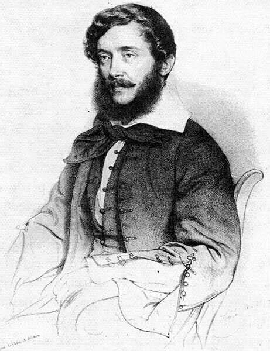

Kossuth Lajos magyar államférfi, a Batthyány-kormány pénzügyminisztere, a Honvédelmi Bizottmány elnöke, Magyarország kormányzó-elnöke.
1824 és 1832 között ügyvédi gyakorlatot folytatott szülőföldjén, Zemplén vármegyében. Karrierje gyorsan ívelt fel, hála apjának is, aki több nemesi családnak volt ügyvédje, és így fiát is bevonta az ügyintézésbe, és fia nemsokára átvette apja munkájának egy részét. Először a sátoraljaújhelyi evangélikus egyházközség ügyvédje, 1827-ben már táblabíró, később pedig már Sátoraljaújhely ügyésze lett. Ebben az időben hivatali munkája mellett történeti kronológiákat, fordításokat készített. Az 1828-as országos összeírásban, melyben az adózókat vették számba az adózási aránytalanságok megszüntetése végett, Kossuth a zempléni rész számbavételénél segédkezett.
Már az 1825–27-es pozsonyi országgyűlésen részt vett, két főrendű özvegy követeként. Báró Révay Ferencnét, született Révay Anna bárónőt és Szent-Iványi János özvegyét képviselte, akik személyesen nem jelenhettek meg az országgyűlésen, főrendű özvegyként viszont ugyanúgy küldhettek maguk helyett követet, mint bármely más távollévő főrendű (ablegatus absentium). Az 1832–36-os pozsonyi országgyűlésre is távollevő főrendek követeként került be. Több Zemplén vármegyei főrendet, köztük Vécsey Sámuel bárót, képviselt. Itt szerkesztette az Országgyűlési Tudósításokat (1832–től 1836-ig), amelyben a liberális reformellenzéknek a társadalmi haladásért és a nemzeti érdekek védelmében vívott harcát (azért, hogy elkerülje a cenzúrát) sokszorosított magánlevelek formájában népszerűsítette.[
1840 májusában szabadult, különösen Deák Ferenc erélyes közbelépése folytán, a többi politikai foglyokkal együtt amnesztiát nyert és kikerült a börtönből, a közvélemény előtt igen magas presztízse volt. A Pálffy-Fidél-féle reakció végét érte és Kossuth mint a Landerer-alapította újságnak, a Pesti Hírlapnak szerkesztője közvetlen összeköttetésbe sietett lépni a minden hazafias iránt felbuzduló, minden új után mohón kapkodó közönséggel. Ugyanezen időbe esik házassága Meszlényi Teréziával, akit Széchenyi István igen érdekes nőnek, amellett tüzes honleánynak ábrázol. E házasságot – az ara katolikus volt – Feichtinger Domokos pest-belvárosi plébános nem akarta megáldani, mire a tanúk, Fáy András a „nemzet mindenese” jelzővel illetett nemzetgazdász, gróf Ráday Gedeon a Nemzeti Színház későbbi igazgatója, Szentkirályi Móric Pest vármegye alispánja és Szombathelyi Antal országgyűlési képviselő protestáltak az 1790-91. törvényt sértő papi eljárás ellen. Így Kossuth személyesen is nagyon közelről volt érdekelve az abban a korban a közvéleményt legerősebben foglalkoztató vegyes házassági sérelem kérdésében. Kossuth élénken részt vett Pest vármegye gyűléstermében az ezen kérdés körül megindult vitákban. Ekkor, 1840-ben nevezte el későbbi nagy ellenfelét, Széchenyi Istvánt „a legnagyobb magyar”-nak. 1842-ben Tinnyére költözött, ahol 60 holdas földje volt. Négy évig, azaz 1846-ig élt itt.